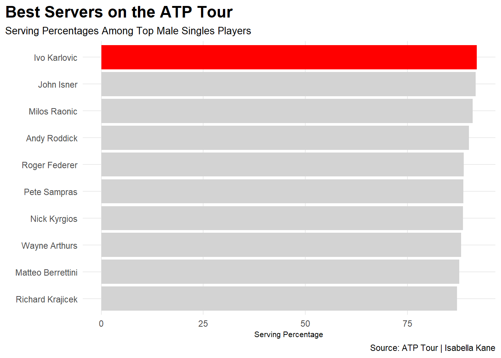
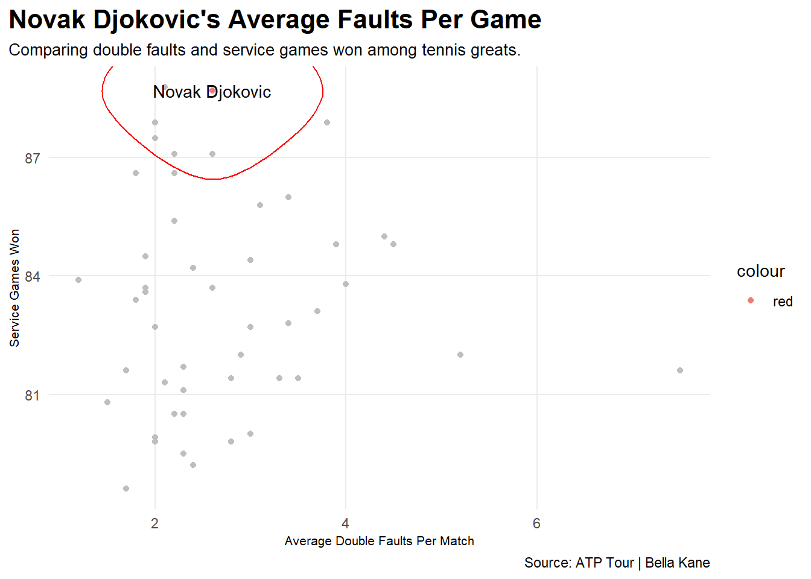
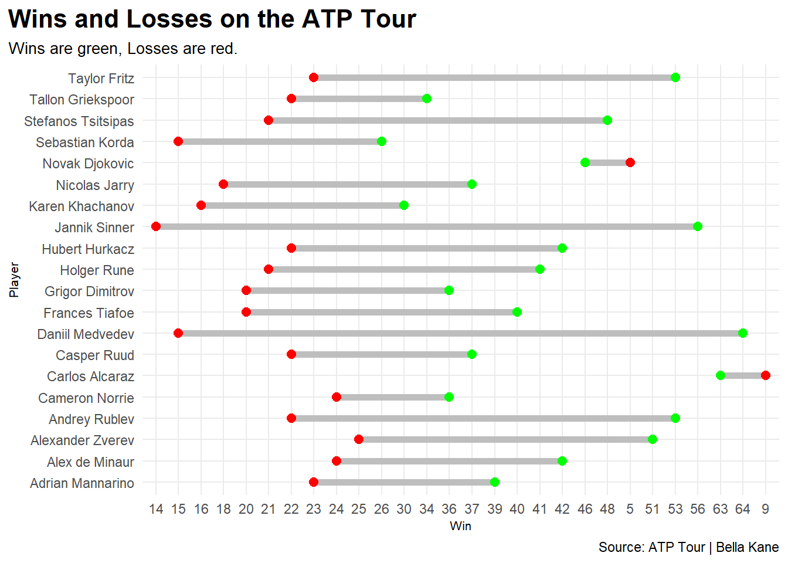

Does serving affect your ability to be a great tennis player?
Ivo Karlovic has the best serving percentage with 92% on all surfaces including clay, hard, and grass. His career service games won is 8,845, though Karlovic is no longer an active player.
Karlovic isn’t in the top 50 list of Wins and Losses, which can tell us that even if you are a really good and consistent server, it doesn’t necessarily make you a great tennis player.
The other great servers here are John Isner, Milos Raonic, Andy Roddick, Roger Federer, Pete Sampras, Nick Kyrgios, Wayne Arthurs, Matteo Berrettini, and Richard Krajicek.
The top 10 servers fall between 75%-92% in serving percentages. Counting just active players, John Isner would be the best server with a 91% serving percentage.
Roddick, Federer, Sampras, Arthurs, and Krajicek are the other inactive players on this list, leaving four active players as the best servers of all time.
Code
library(tidyverse)library(ggalt)library(ggtext)serves <-read_csv("Tennis Serves - Sheet1 (2).csv")players <- serves |>mutate(`Games Won`= Percentage/`Total Games` )ik <- players |>filter(Player =="Ivo Karlovic")ggplot() +geom_bar(data=players, aes(x=reorder(Player, Percentage), weight=Percentage), fill="light grey") +geom_bar(data=ik, aes(x=reorder(Player, Percentage), weight=Percentage), fill="red") +coord_flip() +labs(x="", y="Serving Percentage", title="Best Servers on the ATP Tour", subtitle="Serving Percentages Among Top Male Singles Players", caption="Source: ATP Tour | Isabella Kane" ) +theme_minimal() +theme(plot.title =element_text(size =16, face ="bold"),axis.title =element_text(size =8), plot.subtitle =element_text(size=10), panel.grid.minor =element_blank(),plot.title.position ="plot" )

Code
fault <-read_csv("Faults - Sheet1.csv")nd <- fault |>filter(Player =="Novak Djokovic")ggplot() +geom_point(data=fault, aes(x=`Avg. Double Faults/Match`, y=`Service Games Won`), color="grey") +geom_text(data=nd, aes(x=`Avg. Double Faults/Match`, y=`Service Games Won`, label=Player)) +geom_encircle(data=nd, aes(x=`Avg. Double Faults/Match`, y=`Service Games Won`), s_shape=.3, expand=.1, colour="red") +geom_point(data=nd, aes(x=`Avg. Double Faults/Match`, y=`Service Games Won`, colour="red")) +labs(title="Novak Djokovic's Average Faults Per Game", subtitle="Comparing double faults and service games won among tennis greats.", caption="Source: ATP Tour | Bella Kane", x="Average Double Faults Per Match", y="Service Games Won") +theme_minimal() +theme(plot.title =element_text(size =16, face ="bold"),axis.title =element_text(size =8), plot.subtitle =element_text(size=10), panel.grid.minor =element_blank(),plot.title.position ="plot" )

The average double faults in a match among the top 79 men’s singles players doesn’t go above 6 and is usually between 2 to 4 a match.
Djokovic is the dot at 2.8 faults a match and 89% service games won. The outlier dot at 7.5 faults a match is Alexander Bublik. Having double faults doesn’t necessarily make you a bad tennis player, Bublik has the highest average double faults but ranks in the top 50.
It’s very rare to not have a double fault once in a match, especially if the match has gone on for awhile making the players more tired and it harder to serve.
Code
wins <-read_csv("Win Loss Index - Sheet1.csv")score <- wins |>separate(`YTD Win/Loss`, into=c("Win", "Loss"), sep="-")ggplot() +geom_dumbbell(data=score, aes(y=Player, x=Win, xend=Loss),size =2,colour ="grey",colour_x ="green",colour_xend ="red") +labs(title="Wins and Losses on the ATP Tour", subtitle ="Wins are green, Losses are red.", caption="Source: ATP Tour | Bella Kane" ) +theme_minimal() +theme(plot.title =element_text(size =16, face ="bold"),axis.title =element_text(size =8), plot.subtitle =element_text(size=10), panel.grid.minor =element_blank(),plot.title.position ="plot" )

The top player in terms of wins and losses this year is Carlos Alvarez, who actually ended up winning Wimbledon 2023 in men’s singles. He won 63 matches and lost only nine.
Following him is Novak Djokovic, who Alvarez played in the Wimbledon’s final match. He won 46 matches and lost five.
Being a good server can make you a great player in the case of Djokovic, but there are many other factors that come into play on the court that can contribute to being a great player. The average wins for these singles players is around 37 and the average losses is usually around 22, except for the outlier Djokovic and Alvarez.
Serving doesn’t necessarily make you a good player but it can certainly help to make you a great tennis player.